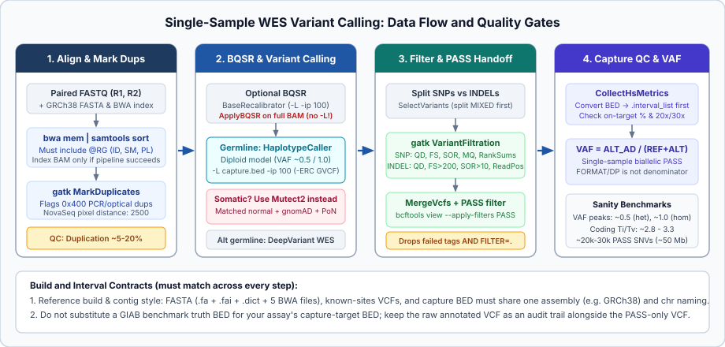
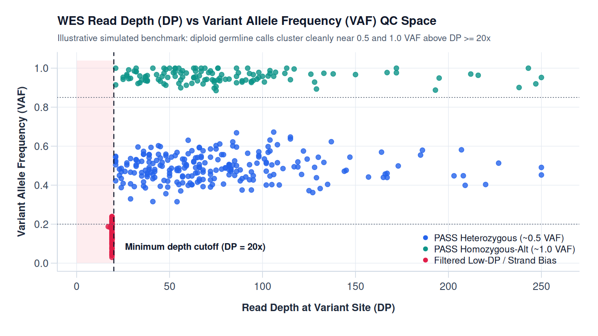

Whole Exome Sequencing (WES): Variant Calling
Nasir Mahmood Abbasi, PhD
Bioinformatics Educator

Whole Exome Sequencing (WES) concentrates sequencing reads on the ~1-2% of the human genome that encodes proteins, letting you detect coding single-nucleotide variants (SNVs) and small insertions or deletions (indels) at high depth. This template walks through every stage from paired-end FASTQ reads to a capture-checked BAM, a hard-filtered PASS-only VCF, and a per-variant allele fraction table, plus a runnable 15-minute local VCF contract exercise.
Format: Advanced template. Follow a complete single-sample germline WES pipeline with explicit file contracts, capture-target QC, and a local 4-record VCF test fixture. For real exomes, plug in your own matched FASTQ reads, reference FASTA, and assay capture BED.
What you will be able to do: Align paired exome reads with required GATK Read Groups, flag PCR/optical duplicates, run optional base quality recalibration without dropping off-target reads, call and hard-filter germline variants, compute biallelic Variant Allele Frequency (VAF), and audit hybrid-capture coverage and Ti/Tv ratios.
Prerequisites and time: Familiarity with the Linux shell (Command Line Part 1), FASTQ quality concepts (Quality Control Fundamentals), and BAM/VCF files. Required tools: BWA-MEM (0.7.17+ or bwa-mem2), samtools (1.16+), FastQC, GATK (4.4+), bcftools (1.15+), and R. Running the synthetic VCF contract exercise takes ~15 minutes; processing a full 50-100x human WES sample takes ~2-6 hours on 8-16 CPU threads with 16-32 GB RAM.
1. How WES variant calling works and tool choices
In WES, biotinylated RNA or DNA probes ("baits") hybridize to sheared genomic DNA and pull down targeted protein-coding exons before sequencing. Unlike whole-genome sequencing (WGS), WES coverage drops sharply outside target boundaries and varies across exons because of GC content, probe efficiency, and PCR amplification. Two metrics capture this biology downstream:
- Variant Allele Frequency (VAF): the fraction of informative reads supporting the alternate allele at a site, computed for a biallelic call as
ALT_AD / (REF_AD + ALT_AD). In a diploid germline sample, true heterozygous variants (such as a carrier variant in CFTR or BRCA1) cluster near0.5, and homozygous alternate variants cluster near1.0. - Transition-to-transversion ratio (Ti/Tv): transitions swap purines (A <-> G) or pyrimidines (C <-> T), whereas transversions cross those classes. Because methylated CpG dinucleotides in GC-rich exons frequently deaminate (C -> T) and purifying selection removes many nonsynonymous transversions, true human coding SNVs typically show Ti/Tv around 2.8-3.3 (compared with ~2.0-2.1 genome-wide and ~0.5 for random sequencing errors).

Choosing the right variant calling workflow
| Experimental goal | Recommended tool / mode | Key inputs beyond FASTA & BAM | Why not HaplotypeCaller direct VCF? |
|---|---|---|---|
| Single-sample germline SNVs/indels | gatk HaplotypeCaller (direct VCF) + hard filters | Capture BED (-L) with 100 bp padding (-ip 100) | Default workflow shown in this tutorial |
| Cohort germline (>= 2 samples) | HaplotypeCaller -ERC GVCF + GenomicsDBImport + GenotypeGVCFs | Per-sample GVCFs; VQSR when cohort >= 30 exomes | Direct VCF omits reference-confidence blocks needed for joint genotyping |
| Single-sample germline without hand-tuned filters | DeepVariant (--model_type=WES) | Deduplicated BAM + --regions capture BED | Trained CNN model replaces manual hard-filter thresholds; skip BQSR |
| Matched tumor/normal somatic calling | gatk Mutect2 + FilterMutectCalls | Matched normal BAM, gnomAD AF resource, capture Panel of Normals | HaplotypeCaller assumes diploid VAF (~0.5 / 1.0) and misses subclonal tumor VAFs (0.02-0.30) |
2. Directory layout, reference contracts, and version check
Before running any command, verify that all inputs share the exact same reference assembly (for example GRCh38 primary assembly) and chromosome naming convention (chr1 vs 1). Notice that FASTA indexing involves two unrelated index sets: samtools faidx (.fai) and gatk CreateSequenceDictionary (.dict) do not replace the five BWA FM-index files (.amb, .ann, .bwt, .pac, .sa).
- Raw paired FASTQ:
raw/NA12878_R1.fastq.gzandraw/NA12878_R2.fastq.gz - Reference FASTA & GATK indexes:
refs/GRCh38.fa,refs/GRCh38.fa.fai, andrefs/GRCh38.dict - Exome capture BED:
refs/SureSelect_V6_intervals.bed(matching the reference assembly and contig prefixes) - Optional BQSR known-sites: GRCh38-matched dbSNP and Mills/1000G gold-standard indel VCFs (plus
.tbitabix indexes)
To obtain public practice reads, browse the IGSR NA12878 sample portal and NIST Genome in a Bottle (GIAB). Filter explicitly for paired-end exome FASTQs (not WGS), verify MD5 checksums, and fetch the matching capture kit BED from the study or vendor. Never substitute a GIAB high-confidence benchmark truth BED for an assay's capture-target BED.
Create the project directories, verify required input files are non-empty, and record installed tool versions before running the pipeline:
mkdir -p raw refs aligned metrics vcf diagnostics
for f in raw/NA12878_R1.fastq.gz raw/NA12878_R2.fastq.gz refs/GRCh38.fa refs/GRCh38.fa.fai refs/GRCh38.dict refs/SureSelect_V6_intervals.bed; do
test -s "$f" || { echo "Missing or empty required input: $f" >&2; exit 1; }
done
date -Is
bwa 2>&1 | head -n 3
samtools --version | head -n 1
gatk --version
bcftools --version | head -n 1
R --version | head -n 1
3. Pipeline: alignment through variant calling
Adjust thread flags (-t, -@, --native-pair-hmm-threads) to match your workstation or compute allocation. Every step below states its inputs, outputs, and why key parameters are required.
3.1 Alignment and coordinate sorting
Why: Short paired reads must be mapped to the reference genome and sorted by genomic coordinate before duplicate marking or variant calling. Human GRCh38 exceeds 2 GB, so bwa index requires the -a bwtsw algorithm (the default is algorithm fails above 2 GB). Passing a Read Group string (-R) with ID, sample name (SM), and platform (PL) embeds sample provenance in the BAM header; GATK refuses to run without SM. Wrapping the pipe in set -euo pipefail ensures an upstream BWA failure aborts before samtools index creates a misleading index on a truncated BAM. (If bwa-mem2 is installed, it produces identical alignments roughly 2x faster.)
# Input: raw/NA12878_R1.fastq.gz, raw/NA12878_R2.fastq.gz, refs/GRCh38.fa
# Output: aligned/NA12878.sorted.bam (coordinate-sorted BAM)
set -euo pipefail
# BWA-MEM needs its own FM-index for this exact FASTA; .fai/.dict are not substitutes.
# If refs/GRCh38.fa has changed since indexing, remove/rebuild its BWA index before running.
# GRCh38 is human-genome-sized; use BWA's bwtsw index builder rather than the <=2 GB IS algorithm.
bwa_index_missing=false
for suffix in amb ann bwt pac sa; do
if [[ ! -s "refs/GRCh38.fa.${suffix}" ]]; then
bwa_index_missing=true
fi
done
if [[ "$bwa_index_missing" == true ]]; then
echo "Preparing BWA FM-index from refs/GRCh38.fa (rebuild if this FASTA changes)." >&2
bwa index -a bwtsw refs/GRCh38.fa
fi
for suffix in amb ann bwt pac sa; do
test -s "refs/GRCh38.fa.${suffix}" || { echo "Missing BWA FM-index refs/GRCh38.fa.${suffix}; alignment stopped." >&2; exit 1; }
done
if ! bwa mem -t 16 -R '@RG\tID:NA12878\tSM:NA12878\tPL:ILLUMINA' refs/GRCh38.fa \
raw/NA12878_R1.fastq.gz raw/NA12878_R2.fastq.gz \
| samtools sort -@ 8 -o aligned/NA12878.sorted.bam -T aligned/tmp.NA12878; then
echo "Alignment pipeline failed (BWA or samtools sort); stopping before BAM indexing." >&2
exit 1
fi
# Index the sorted BAM
samtools index aligned/NA12878.sorted.bam
Check: Verify aligned/NA12878.sorted.bam.bai exists and inspect the header with samtools view -H aligned/NA12878.sorted.bam | grep '^@RG' to confirm ID, SM, and PL are present.
3.2 Mark PCR and optical duplicates
Why: Hybrid-capture WES uses PCR amplification after bait pull-down. When multiple reads originate from the same original DNA molecule, counting them independently inflates apparent coverage and turns a single early-cycle PCR error into a confident false variant. MarkDuplicates keeps all reads in the BAM but sets SAM flag 0x400 on duplicate copies so HaplotypeCaller ignores them during assembly.
# Input: aligned/NA12878.sorted.bam
# Output: aligned/NA12878.dedup.bam, metrics/NA12878_dup_metrics.txt
gatk MarkDuplicates \
-I aligned/NA12878.sorted.bam \
-O aligned/NA12878.dedup.bam \
-M metrics/NA12878_dup_metrics.txt \
--CREATE_INDEX true
Patterned flowcell note: The default optical duplicate pixel distance is 100 (appropriate for HiSeq 2000/2500). For patterned flowcells such as Illumina NovaSeq or HiSeq 3000/4000, add --OPTICAL_DUPLICATE_PIXEL_DISTANCE 2500 so optical clusters are separated accurately from library PCR duplicates.
Check: Inspect PERCENT_DUPLICATION in metrics/NA12878_dup_metrics.txt. Well-constructed human WES libraries typically fall around 0.05-0.20 (5-20%); values above 0.35 warn of low starting DNA complexity or over-amplification.
3.3 Base Quality Score Recalibration (BQSR, optional)
Why: Sequencer base quality scores can drift systematically with read cycle and dinucleotide context. BaseRecalibrator models these residual errors and ApplyBQSR adjusts the Phred scores, while --known-sites masks genuine common polymorphisms so real variants are not misclassified as sequencing errors.
# Input: aligned/NA12878.dedup.bam, known-sites VCFs (e.g., dbsnp, Mills indels)
# Output: aligned/NA12878.recal.table, aligned/NA12878.recal.bam
gatk BaseRecalibrator \
-R refs/GRCh38.fa \
-I aligned/NA12878.dedup.bam \
--known-sites refs/dbsnp_146_GRCh38.vcf.gz \
--known-sites refs/Mills_and_1000G_gold_standard.indels_GRCh38.vcf.gz \
-O aligned/NA12878.recal.table \
-L refs/SureSelect_V6_intervals.bed \
-ip 100
gatk ApplyBQSR \
-R refs/GRCh38.fa \
-I aligned/NA12878.dedup.bam \
--bqsr-recal-file aligned/NA12878.recal.table \
-O aligned/NA12878.recal.bam \
--create-output-bam-index true
Do not pass -L to ApplyBQSR: Restricting BaseRecalibrator with -L ... -ip 100 focuses model building on captured exons and saves runtime. Passing -L to ApplyBQSR, however, discards every read outside those intervals from the output BAM. Always run ApplyBQSR on the full BAM. When using DeepVariant downstream or working with modern binned Q-score NovaSeq data where BQSR adds minimal gain, you may skip BQSR and pass aligned/NA12878.dedup.bam directly to variant calling.
3.4 Call germline variants with GATK HaplotypeCaller
Why: Instead of calling bases pileup-by-pileup, HaplotypeCaller identifies active regions with variation and performs local de novo haplotype assembly, substantially improving accuracy on small indels and closely spaced SNVs. Passing -L refs/SureSelect_V6_intervals.bed with 100 bp interval padding (-ip 100) focuses compute on capture targets while preserving flanking splice-junction bases and exon-edge reads.
# Input: aligned/NA12878.recal.bam (or aligned/NA12878.dedup.bam if skipping BQSR)
# Output (single-sample): vcf/NA12878_raw.vcf.gz
gatk HaplotypeCaller \
-R refs/GRCh38.fa \
-I aligned/NA12878.recal.bam \
-L refs/SureSelect_V6_intervals.bed \
-ip 100 \
--native-pair-hmm-threads 8 \
-O vcf/NA12878_raw.vcf.gz
Scaling to a cohort: For multi-sample studies, add -ERC GVCF (and write vcf/NA12878.g.vcf.gz) so each sample emits reference-confidence blocks, then consolidate with gatk GenomicsDBImport and call genotypes jointly with gatk GenotypeGVCFs. Never treat a raw per-sample GVCF as a final callset.
Germline vs. somatic calling: HaplotypeCaller assumes a diploid germline sample (expected VAFs near 0.5 and 1.0). Never use it for somatic tumor calling, where stromal admixture, copy-number changes, and subclones push true variant allele fractions down to 0.02-0.30. For somatic WES, run gatk Mutect2 with a matched normal (-I tumor.bam -I normal.bam -normal NORMAL_SM), population allele frequencies (--germline-resource af-only-gnomad.hg38.vcf.gz), and a capture-matched Panel of Normals (--panel-of-normals pon.vcf.gz), followed by GetPileupSummaries, CalculateContamination, and FilterMutectCalls.
4. Hard filtering, PASS handoff, liftover, and VAF
4.1 Hard-filter SNPs and INDELs separately
Why: Single-sample WES lacks enough variants and sample diversity to train Variant Quality Score Recalibration (VQSR, recommended at >= 30 exomes) without risking over-filtering. Hard filtering applies transparent thresholds to site annotations, but SNPs and indels must be separated first because indels naturally show higher FisherStrand values and lack valid mapping-quality rank-sum comparisons on many reads. Note that VariantFiltration writes filter labels into the FILTER column rather than deleting rows, leaving an audit trail.
Note on mixed multiallelic sites and modern model-based alternatives: Strict --select-type-to-include SNP and INDEL drop sites annotated as MIXED (containing both a SNP and an indel). Either decompose multiallelic records first with bcftools norm -m -both or handle MIXED records explicitly. For single-sample germline WES without manual thresholds, consider DeepVariant (--model_type=WES) or GATK's GPU-accelerated NVScoreVariants (which replaced the removed CNNScoreVariants tool starting in GATK 4.6.1.0).
# Input: vcf/NA12878_raw.vcf.gz
# Output: vcf/NA12878_filtered.vcf.gz (SNPs and INDELs filtered with class-specific thresholds, then merged)
set -euo pipefail
gatk SelectVariants -R refs/GRCh38.fa -V vcf/NA12878_raw.vcf.gz \
--select-type-to-include SNP -O vcf/NA12878_raw_snps.vcf.gz
gatk VariantFiltration -R refs/GRCh38.fa -V vcf/NA12878_raw_snps.vcf.gz \
-O vcf/NA12878_filtered_snps.vcf.gz \
--filter-name "QD_lt_2" --filter-expression "QD < 2.0" \
--filter-name "QUAL_lt_30" --filter-expression "QUAL < 30.0" \
--filter-name "SOR_gt_3" --filter-expression "SOR > 3.0" \
--filter-name "FS_gt_60" --filter-expression "FS > 60.0" \
--filter-name "MQ_lt_40" --filter-expression "MQ < 40.0" \
--filter-name "MQRankSum_lt_-12.5" --filter-expression "MQRankSum < -12.5" \
--filter-name "ReadPosRankSum_lt_-8" --filter-expression "ReadPosRankSum < -8.0"
gatk SelectVariants -R refs/GRCh38.fa -V vcf/NA12878_raw.vcf.gz \
--select-type-to-include INDEL -O vcf/NA12878_raw_indels.vcf.gz
gatk VariantFiltration -R refs/GRCh38.fa -V vcf/NA12878_raw_indels.vcf.gz \
-O vcf/NA12878_filtered_indels.vcf.gz \
--filter-name "QD_lt_2" --filter-expression "QD < 2.0" \
--filter-name "QUAL_lt_30" --filter-expression "QUAL < 30.0" \
--filter-name "SOR_gt_10" --filter-expression "SOR > 10.0" \
--filter-name "FS_gt_200" --filter-expression "FS > 200.0" \
--filter-name "ReadPosRankSum_lt_-20" --filter-expression "ReadPosRankSum < -20.0"
gatk MergeVcfs \
-I vcf/NA12878_filtered_snps.vcf.gz \
-I vcf/NA12878_filtered_indels.vcf.gz \
-O vcf/NA12878_filtered.vcf.gz
| Annotation | What it measures | SNP filter | INDEL filter |
|---|---|---|---|
QD | Variant confidence (QUAL) divided by unfiltered depth across non-reference samples; prevents deep false positives from looking confident | < 2.0 | < 2.0 |
QUAL | Phred-scaled probability that the site is polymorphic (optional backstop alongside QD) | < 30.0 | < 30.0 |
FS | Fisher's exact test p-value for strand bias between forward and reverse reads (higher = stronger bias) | > 60.0 | > 200.0 |
SOR | Symmetric Odds Ratio for strand bias; remains calibrated at high WES depth where FS can over-penalize | > 3.0 | > 10.0 |
MQ | Root mean square mapping quality across all reads at the site (low values signal repetitive sequence) | < 40.0 | Omitted |
MQRankSum | Mapping quality difference between ref- and alt-supporting reads (evaluated only at heterozygous sites) | < -12.5 | Omitted |
ReadPosRankSum | Whether alt bases cluster near the error-prone ends of reads (evaluated only at heterozygous sites) | < -8.0 | < -20.0 |
Why JEXL missing-annotation warnings appear: Rank-sum annotations (MQRankSum, ReadPosRankSum) require both reference and alternate reads, so homozygous alternate sites lack them. VariantFiltration logs a warning and evaluates the expression as false (it does not falsely fail those sites).
4.2 Create an explicit PASS-only VCF for downstream VAF
Why: In VCF, an unreviewed FILTER=. record is not equivalent to FILTER=PASS. Extracting strictly PASS records with bcftools view --apply-filters PASS prevents unreviewed or failed calls from leaking into downstream summaries while preserving vcf/NA12878_filtered.vcf.gz as the audit log.
# Input: vcf/NA12878_filtered.vcf.gz (FILTER annotations retained)
# Output: vcf/NA12878_pass.vcf.gz (only records with FILTER=PASS)
set -euo pipefail
bcftools view --apply-filters PASS --output-type z \
--output vcf/NA12878_pass.vcf.gz vcf/NA12878_filtered.vcf.gz
4.3 Optional: LiftOver variants between genome builds
The workflow above aligns and calls on GRCh38, so its output needs no liftover. Only if you receive an external VCF originally called on GRCh37/hg19 and need GRCh38 coordinates, convert it with gatk LiftoverVcf using an hg19-to-hg38 UCSC chain file. Add --RECOVER_SWAPPED_REF_ALT true (paired with --TAGS_TO_REVERSE AF) if you want to rescue sites whose reference and alternate alleles flipped between builds, inspect --REJECT for unmapped loci, and always re-annotate lifted calls.
# Separate input: this VCF was called against GRCh37; it is not produced above.
# Output: vcf/NA12878_GRCh37input_liftedToGRCh38.vcf.gz
gatk LiftoverVcf \
-I vcf/NA12878_GRCh37_filtered.vcf.gz \
-O vcf/NA12878_GRCh37input_liftedToGRCh38.vcf.gz \
--CHAIN refs/hg19ToHg38.over.chain.gz \
-R refs/GRCh38.fa \
--REJECT vcf/NA12878_GRCh37_liftover_rejected.vcf.gz
4.4 Compute Variant Allele Frequency (VAF)
Why: Calculating VAF as ALT_AD / (REF_AD + ALT_AD) checks whether genotype calls match underlying read support. Notice that FORMAT/AD counts informative reads per allele (REF,ALT), whereas FORMAT/DP includes filtered depth used during genotyping and may not equal REF_AD + ALT_AD. This script enforces a single-sample guard and marks missing genotypes or multiallelic sites (ALT containing ,) as NA instead of silently computing a misleading two-allele fraction.
# Input: vcf/NA12878_pass.vcf.gz
# Output: vcf/NA12878_pass.withVAF.tsv (one sample; FILTER and FORMAT/DP shown)
set -euo pipefail
sample_count=$(bcftools query -l vcf/NA12878_pass.vcf.gz | wc -l)
if [[ "$sample_count" -ne 1 ]]; then
echo "Expected exactly one VCF sample; select and review a sample before computing VAF." >&2
exit 1
fi
bcftools query -f '%CHROM\t%POS\t%REF\t%ALT\t%FILTER[\t%GT\t%AD\t%DP]\n' vcf/NA12878_pass.vcf.gz \
| awk 'BEGIN{OFS="\t"; print "CHROM","POS","REF","ALT","FILTER","GT","REF_AD","ALT_AD","FORMAT_DP","VAF"} \
{split($7,ad,","); if ($5!="PASS" || $4 ~ /,/ || $6=="." || $6=="./." || $6==".|." || ad[1]=="" || ad[1]=="." || ad[2]=="" || ad[2]==".") {v="NA"} else {den=ad[1]+ad[2]; v=(den>0 ? ad[2]/den : "NA")} print $1,$2,$3,$4,$5,$6,ad[1],ad[2],$8,v}' \
> vcf/NA12878_pass.withVAF.tsv
Expected output on the 4-record synthetic contract fixture: A PASS biallelic row with GT:AD:DP=0/1:18,12:33 has AD sum 30 and VAF 12/30 = 0.4 (while FORMAT_DP stays 33). Both the QD_lt_2 record and the unreviewed FILTER=. record are removed by step 4.2, and the multiallelic PASS row (ALT=C,G, AD=10,5,3) outputs VAF=NA:
CHROM POS REF ALT FILTER GT REF_AD ALT_AD FORMAT_DP VAF
chrToy 2 C T PASS 0/1 18 12 33 0.4
chrToy 6 A C,G PASS 1/2 10 5 19 NA
Practice: verify the filter and VAF contract locally (~15 minutes)
Download the 4-record synthetic VCF fixture into a temporary working folder, compress it into vcf/NA12878_filtered.vcf.gz with bcftools view -Oz -o vcf/NA12878_filtered.vcf.gz filter_status_ad_dp.vcf, and run steps 4.2 and 4.4 (do not run alignment or GATK on this toy fixture).
Check expected behavior and edge cases
Only two rows (chrToy:2 and chrToy:6) survive into vcf/NA12878_pass.withVAF.tsv: chrToy:4 (QD_lt_2) and chrToy:8 (FILTER=.) are excluded. The biallelic row gives VAF=0.4, and the multiallelic row gives NA. If you duplicate the sample column in the fixture, the sample-count guard aborts with Expected exactly one VCF sample before overwriting the TSV.
4.5 Quick VAF distribution plot in R
Why: Plotting all passing biallelic VAFs reveals global sample health in seconds: clean diploid germline WES produces sharp peaks near 0.5 and 1.0, whereas a broad shelf near 0.1-0.3 or shifted heterozygous peak signals DNA contamination, mosaicism, or capture bias.
# Input: vcf/NA12878_pass.withVAF.tsv
# Output: diagnostics/VAF_distribution.png
Rscript -e '
d <- read.delim("vcf/NA12878_pass.withVAF.tsv", header = TRUE)
png("diagnostics/VAF_distribution.png", width = 800, height = 600)
hist(as.numeric(d$VAF[!is.na(d$VAF)]), breaks = 100, col = "steelblue",
main = "VAF distribution", xlab = "VAF")
dev.off()
'
5. Quality control checkpoints and interpretation
Never interpret a VCF before confirming read quality, alignment rate, duplicate fraction, and capture-target enrichment. Note that gatk CollectHsMetrics requires Picard .interval_list format (containing the @SQ sequence dictionary header) rather than a raw BED file, so convert your capture BED first with gatk BedToIntervalList:

# FASTQ quality, alignment summary, and hybrid-selection target metrics
fastqc -o metrics raw/NA12878_R1.fastq.gz raw/NA12878_R2.fastq.gz
samtools flagstat aligned/NA12878.dedup.bam > metrics/NA12878_flagstat.txt
gatk BedToIntervalList \
-I refs/SureSelect_V6_intervals.bed \
-O refs/SureSelect_V6_intervals.interval_list \
-SD refs/GRCh38.dict
gatk CollectHsMetrics \
-I aligned/NA12878.dedup.bam \
-O metrics/NA12878_hs_metrics.txt \
-R refs/GRCh38.fa \
--BAIT_INTERVALS refs/SureSelect_V6_intervals.interval_list \
--TARGET_INTERVALS refs/SureSelect_V6_intervals.interval_list
bcftools stats vcf/NA12878_pass.vcf.gz > metrics/NA12878_bcftools_stats.txt
| Tool & metric | Healthy human WES range | What an outlier warns of |
|---|---|---|
FastQC (% >= Q30) | Typically >= 80-85% | Degraded library, cluster over-crowding, or unremoved adapter read-through |
samtools flagstat (mapped / properly paired) | >= 95% mapped; >= 90% properly paired | Cross-species contamination, wrong reference build, or degraded fragments |
MarkDuplicates (PERCENT_DUPLICATION) | ~0.05-0.20 (5-20%) | > 0.35 signals low input DNA or excessive PCR cycles |
CollectHsMetrics (PCT_SELECTED_BASES) | Typically 60-80%+ | < 40% signals capture failure or a mismatched BED/reference build |
CollectHsMetrics (FOLD_80_BASE_PENALTY, PCT_TARGET_BASES_20X) | Fold-80 <= 2.0-2.5; 20x >= 85-95% | Uneven GC capture dropout or insufficient sequencing depth for heterozygous calling |
bcftools stats (on-target SNVs & coding Ti/Tv) | ~20,000-30,000 SNVs (~50 Mb capture); Ti/Tv ~2.8-3.3 | Ti/Tv < 2.2 indicates excess false positives or off-target contamination |
Interpreting passing variants responsibly: A heterozygous PASS variant at VAF ~0.5 in a disease-associated gene is only a starting candidate. Confirm target-region coverage at that exon, filter common population alleles with gnomAD, evaluate clinical assertions in ClinVar and ACMG/AMP classification rules, and plan orthogonal confirmation (such as Sanger sequencing) before clinical reporting. WES only evaluates covered target bases, so low coverage at a locus does not prove a variant is absent.
6. Troubleshooting, next steps, and references
| Symptom / error message | Likely cause | Fix |
|---|---|---|
HaplotypeCaller fails with "No samples in header" | BAM lacks Read Group (@RG) or SM tag | Re-run bwa mem -R '@RG\tID:...\tSM:...\tPL:ILLUMINA' or repair with gatk AddOrReplaceReadGroups |
CollectHsMetrics fails reading .bed | Picard requires .interval_list with @SQ headers | Run gatk BedToIntervalList with -SD refs/GRCh38.dict first and pass the .interval_list file |
PCT_SELECTED_BASES near 0% or empty VCF | Contig mismatch (chr1 vs 1) or wrong build (GRCh37 BED on GRCh38 BAM) | Verify chromosome prefixes across FASTA, BED, and known-sites; align all resources to one assembly |
| Excess false positives near exon boundaries | Missing interval padding or clipped capture-edge reads | Pass -ip 100 to HaplotypeCaller and inspect soft-clipped read ends in IGV |
| Coding Ti/Tv below ~2.2 | Overly permissive filters, off-target noise, or cross-sample contamination | Verify calls are restricted to target BED, inspect QD/SOR distributions, and check contamination (e.g., VerifyBamID2) |
Next steps
- Scale this single-sample template to a multi-sample cohort workflow using Reproducible Workflows with Snakemake and Nextflow and HPC Job Submission (Slurm).
- For deeper QC concepts across sequencing assays, review Quality Control Fundamentals.
References
- Li H, Durbin R (2009). Fast and accurate short read alignment with Burrows-Wheeler transform. Bioinformatics, 25(14), 1754-1760 (BWA). doi:10.1093/bioinformatics/btp324
- DePristo MA, Banks E, Poplin R, et al. (2011). A framework for variation discovery and genotyping using next-generation DNA sequencing data. Nature Genetics, 43(5), 491-498 (GATK). doi:10.1038/ng.806
- Van der Auwera GA, Carneiro MO, Hartl C, et al. (2013). From FastQ data to high confidence variant calls: the Genome Analysis Toolkit best practices pipeline. Current Protocols in Bioinformatics, 43, 11.10.1-11.10.33. doi:10.1002/0471250953.bi1110s43
- Poplin R, Chang PC, Alexander D, et al. (2018). A universal SNP and small-indel variant caller using deep neural networks. Nature Biotechnology, 36(10), 983-987 (DeepVariant). doi:10.1038/nbt.4235
- Zook JM, McDaniel J, Olson ND, et al. (2019). An open resource for accurately benchmarking small variant and reference calls. Nature Biotechnology, 37(5), 561-566 (Genome in a Bottle NA12878/HG001). doi:10.1038/s41587-019-0074-6
- Corominas J, Smeekens SP, Nelen MR, et al. (2022). Clinical exome sequencing - Mistakes and caveats. Human Mutation, 43(8), 1041-1055. PMC9541396
- Official documentation: GATK Best Practices, GATK Hard-filtering germline short variants, and HTSlib / samtools / bcftools manuals.
Software and package behaviour can change. Please re-check commands against the official documentation. If a command does not work, you find an error, or the tutorial is no longer reproducible, please report it through the Contact page.
Author: Nasir Mahmood Abbasi, PhD - Category: Genomics and Whole-Exome Sequencing